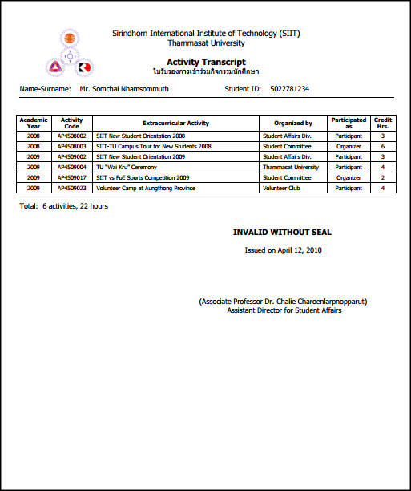

Student Activites
We encourage our students to participate and/or organize extra-curricular activities since the first year of study. Student activities aim to improve students’ potentials in the following parts:
- Cultivate the Arts and Culture (Thai and International)
- Enhance Ethics and Good Personality
- Develop the Academic and Professional Skills
- Establish Charity Mindset and Social Services
- Develop the Sport Skills
Annual Plan of Student Activities
By the cooparation between SIIT Student Committee and Clubs, the annual plan of student activities always be prepared in advance under supervision of the SIIT Student Activities Committee led by the Assistant Director for Student Affairs and Alumni Relation. more details >>>
SIIT Student Committee and Clubs
- SIIT Student Committee
- Automech Club
- Cheerleader Club
- Createach Club
- Cyber-tech Club
- Football Club
- Kendo Club
- Music & Chorus Club
- Photo Club
- Volunteer Club
moredetails >>
SIIT Activity Transcript

The SIIT Activity Transcript can be used as the supporting document (some required, some optional) when the student need to apply for :
- SIIT Scholarship for Student Who have Contributed to Society and/or SIIT Reputation
- SIIT Scholarship for Student with Good Academic Performance and Good Conduct
- SIIT Scholarship for Student with Financial Needs
- Scholarships for Further Study
(Study in Thailand, Study Abroad
- Practical Training /Summer Training
- Job/Career
SIIT Students (all degree regular and exchange students) can obtain the SIIT Activity Transcript:
:: Free of charge for an unofficial issue (for SIIT internal use only, such as the one attached to the SIIT scholarship application)
more details >>
:: Request for the “Official Activity Transcript" must be done at http://reg.siit.tu.ac.th/registrar/home.asp
(Log in into the REG website and follow normal steps for requesting the SIIT Official Transcript, the same process as requesting for the Official Academic Transcript)
- The fee of 50 Baht per issue will be charged for the “Official Activity Transcript".
- Pay the fee at SIIT Finance and Budget Division, Rangsit or Bangkadi campuses (office hours).
SIIT
Sirindhorn International Institute of Technology,
Thammasat University - Rangsit Campus
99 Moo 18, Km. 41 on Paholyothin Highway Khlong Luang, Pathum Thani 12120, Thailand
Tel +66-2-986-9009~13,
+66-2-986-9103~10,
+66-2-564-3221~9
FAX +66-2-986-9112~3
Facebook
Youtube